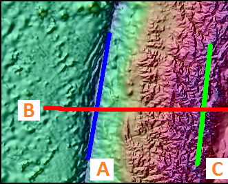
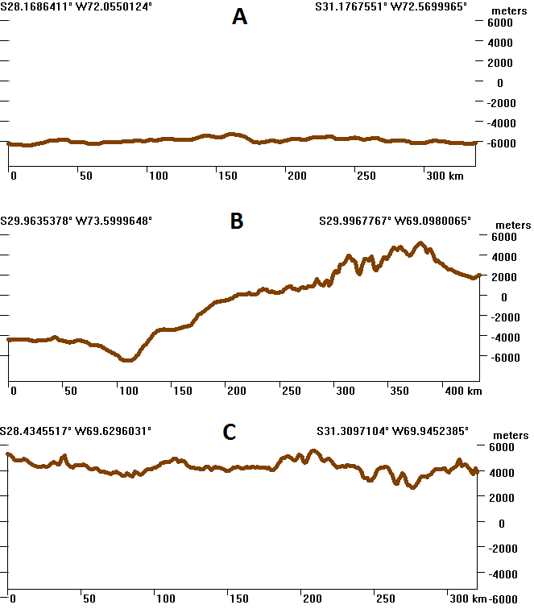

|
 |
Map showing a portion of the Peru-Chile Trench, and three topographic
profiles (or cross sections):
The three profiles are below, with the same vertical scale and about 10 times vertical exaggeration. Profile B does the best job of showing the topography. Cross sections or topographic profiles should be drawn perpendicular to the orientation of the major features, or to the strike of geologic features. |

Parallel Profiles offers a way to average out variation to better see trends.
Last revision 1/5/2020